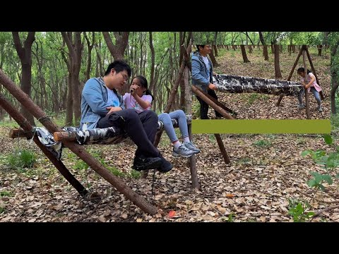

Watch on YouTubeBUILT TO HANG OUT
Tripod hammock bed
Why let the trees decide where we can hang a hammock? We built our own supports instead.
What started as a simple tripod hammock bed became one of our favorite places to sit, read, and hang out—and a design we kept rebuilding and improving along the way.